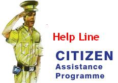

|
Ajay Kant Upadhyay Faculty of Engineering, DayalBagh Educational Institute, Dayalbagh, Agra Uttar Pradesh - 282 005 |
Onsite Project |
 Academic Project |
3D Printing Virtual Simulation Lab:
It is an initiative of Ministry of Human Resource and Development (MHRD). The project aim is to develop "Virtual Laboratory" for simulation and assembly of 3D Printers under “National Mission on Education through Information and Communication Technology (NME-ICT)” of MHRD e-learning Project. 3D printing or additive manufacturing is a process of making three dimensional solid objects from a digital file. The creation of a 3D printed object is achieved using additive processes. 3D printing enables you to produce complex shapes using less material than traditional manufacturing methods.Website: 3D Printing Virtual Simulation Lab
Metal Forming Virtual Simulation Lab:
It is an initiative of Ministry of Human Resource and Development (MHRD). The project aim is to develop "Virtual Laboratory" for Metal Forming processes under “National Mission on Education through Information and Communication Technology (NME-ICT)” of MHRD e-learning Project. The website helps Engineering students for understanding various Metal Forming processes through interactive videos of simulations, detailed description of the processes and Multiple Choice of Questions.MHRD has given an opportunity to Dayalbagh Educational Institute to Develop a "Sakshat Virtual Lab" of "Metal Forming Processes" with IITs under one umbrella. There are twelve institutes, developing Virtual Labs for various disciplines of Simulation Labs and Remote Triggering Labs.
DEI has developed six virtual labs of different disciplines, where four labs are Simulation Labs and two labs are Remote Triggering Labs.
1. Metal Forming Virtual Simulation Lab (Simulation Lab)
2. Virtual Power Lab (Simulation Lab)
3. Virtual Chemistry Lab (Simulation Lab)
4. Virtual Microwave Lab (Simulation Lab)
5. Analytical and Virtual Instrumentation Lab (Remote Triggering Lab)
6. Virtual Advanced Lab for Interactive Design and Test in Electronics (Remote Triggering Lab)
"MFVSlab" is pure simulation lab. It has different type simulations of various Metal Forming Process of Mechanical Engineering Discipline. There are 947 interactive simulations with voice and text, showing the process of simulation.
The project aim was to develop a website which works as Online Police Station. This website provided various facilities for civilians to lodge F.I.R. and know about various activities of Police, reports etc. with a single click. This website is developed using ASP.NET with C# and MSSQL 2005. This project was submited in six semester of M.C.A. in June 2010.